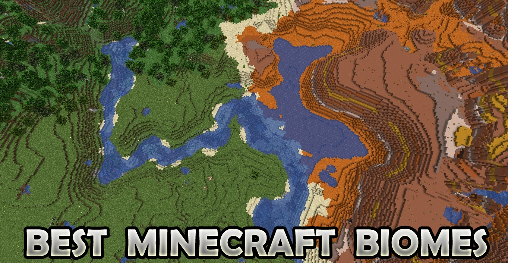

在《我的世界》中，以下是一些资源获取的好地方，即资源丰富的生物群系：
草原（Savanna）：草原是一个开阔的生物群系，有着稀疏的金合欢树。这里的视野开阔，易于发现敌对生物，而且白天树木提供的阴凉较少。草原上资源丰富，包括牛、马、羊、驴等动物，以及村庄和掠夺者前哨站。草原上还有独特的金合欢木和橡木。
丛林（Jungle）：丛林生物群系总是能给玩家带来惊喜，因为它们包含了游戏中其他地方无法获得的极其有用的资源。丛林中有巨大的树木、藤蔓、西瓜（适合自动化农场）、豹猫（可以保护玩家免受爬行者攻击）、鹦鹉（可作为警告系统）和竹子（作为熔炼的燃料）。尽管树木和密集的植被可能使环境变得危险，但只要有鹦鹉和树屋或豹猫在基地周围，就可以管理。
平原（Plains）：对于想要一个开阔空间建造的玩家来说，平原是一个很好的选择。这些广阔的田野非常适合大型项目，并且易于防御敌对生物，因为大多数生物会在早晨被太阳烧死，因为没有遮荫的地方。平原通常靠近森林，所以玩家可以利用这些资源。此外，平原上还有村庄、蜜蜂巢和各种动物。
雪山（Snowy Taiga）：雪山生物群系结合了丛林和森林的特点。这里通常可以找到雪、蕨类植物、甜浆果丛、村庄、掠夺者前哨站等。此外，还有狼、兔子、狐狸等动物，以及冷杉木。
山脉（Mountains）：当你看到大量的岩石、浮岛、洞穴和尖塔时，你就知道自己在一个山脉生物群系中。山脉生物群系也是游戏中唯一可以找到绿宝石的地方，这对于与村民交易非常有用。山脉生物
群系还包括砾石山脉和森林山脉，前者有很多砾石块而不是石头，后者则有树木。
这些生物群系提供了丰富的资源和多样的挑战，是《我的世界》中资源获取的好地方。

friend website:
("shooting game")